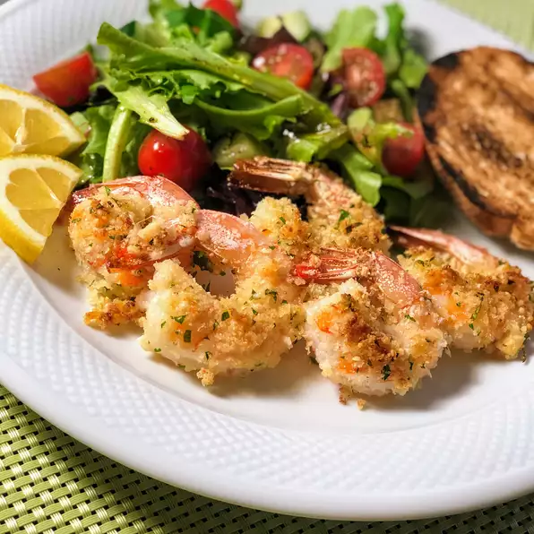

Garlic parmesan Shrimp

Description
Grilled shrimp with lemon and parmesan cheese ready in 10 minutes or less! Easy garlic parmesan shrimp is a great sharing appetizer or light dinner tossed with your favorite pasta or vegetables.
Cook it on a grill or indoor griddle!
Ingredients
- nonstick cooking spray
- 1 cup dry bread crumbs and 1 cup shredded Parmesan cheese
- 2 tablespoons dried parsley and 1½ teaspoons garlic powder
- 1 pound large shrimp, peeled and deveined and 2 tablespoons butter, melted, or more to taste
Instructions
- Preheat the oven to 350 degrees F (175 degrees C). Spray a 9x13-inch glass casserole dish with nonstick cooking spray.
- Combine bread crumbs, Parmesan cheese, parsley, and garlic powder in a large resealable plastic bag. Seal and shake to mix ingredients together. Add shrimp and shake to coat.
- Lay shrimp flat in the prepared baking dish. Sprinkle with any bread crumb mixture remaining in the bag. Drizzle melted butter over the top.
- Bake in the preheated oven until starting to crisp, 15 to 20 minutes. Switch to broil setting until topping is light brown, 2 to 3 minutes.
Back to top of the page
Back to home page